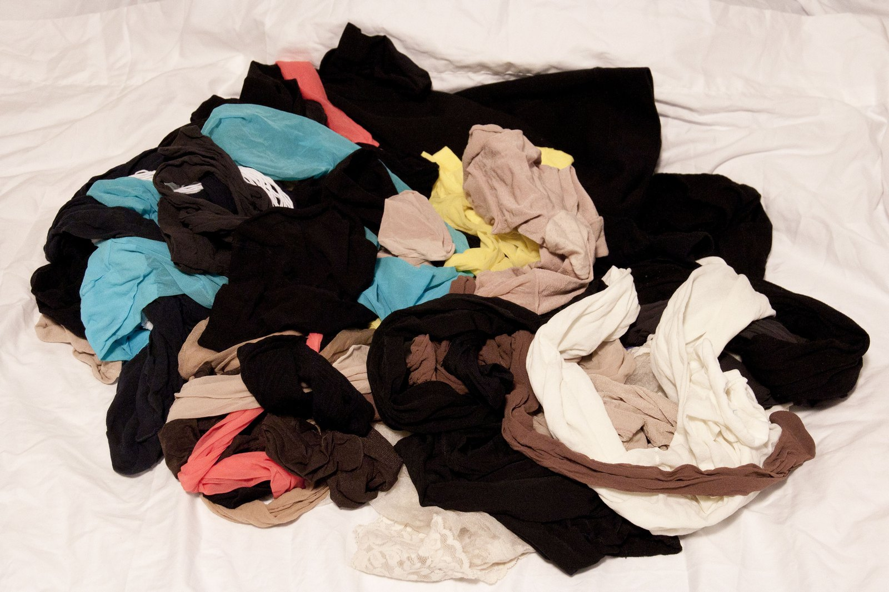

Пояс
Широкий мягкий пояс распределяет давление. Скручивание и врезание говорят о неподходящей посадке.
Практическая библиотека
От массы нити и плетения до посадки и стирки. Здесь нет универсальных обещаний: только измеримые параметры, ограничения и понятные правила.
01 · Плотность
Денье показывает массу 9000 метров нити в граммах. Это помогает оценить толщину и внешний вид, но не гарантирует прочность или температуру.
02 · Конструкция
Одинаковый DEN может ощущаться совершенно по разному из-за кроя, швов и растяжимости.
Широкий мягкий пояс распределяет давление. Скручивание и врезание говорят о неподходящей посадке.
Меньше выделяется под облегающей одеждой и снижает объём соединения деталей.
Дополнительная вставка помогает свободе движения и посадке. Её конструкция зависит от модели и размера.
Невидимый подходит к открытой обуви, усиленный рассчитан на большую нагрузку, открытый оставляет пальцы свободными.
03 · Материалы
Микрофибра описывает тонкость волокон, а не одно химическое вещество. Переработанное и растительное сырьё также не являются синонимами.
Гладкая и прочная основа большинства колготок. Нейлон и капрон относятся к полиамидной группе.
Добавляет растяжимость и возврат формы. Lycra является торговым названием эластанового волокна.
Добавляют тепло и меняют ощущение кожи. Состав и уход зависят от конкретного изделия.
Использует вторичное сырьё. Срок службы вещи и правильный уход остаются отдельной части экологичного выбора.
04 · Размер
Размерные сетки отличаются. Используйте расчёт как отправную точку, затем откройте таблицу производителя.
При нестандартных пропорциях ищите специальные системы. Snag разделяет Curvilicious и Athletic, Glamory публикует расширенные размеры, а медицинские марки используют точные мерки ноги.
Изучить подход Snag05 · Уход
Бережное обращение не делает ткань вечной, но уменьшает лишние нагрузки и повреждения.

Фото: Tc terencec · CC BY-SA 3.0 · веб версия уменьшена
06 · Вопросы
Прозрачный лак может временно ограничить распространение повреждения. Это аварийная мера, а не восстановление прочности.
Не автоматически. На тепло влияют состав, начёс, плетение и условия использования. Ищите прямое назначение термомодели.
Да. Если не хочется показывать усиленную зону, выбирайте невидимый или открытый мысок. Фантазийная пара может быть намеренным акцентом.
Нет. Моделирующая одежда меняет силуэт, а медицинская компрессия имеет класс давления и требует правильного подбора.